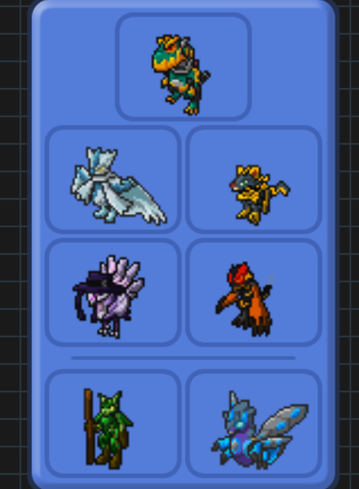

What is Teambuilding?
Teambuilding is the process of finding Loomians that work well with eachother in a team so you can win pvp battles. You may look at Loomians' weaknesses and how their commonly used in the meta to make your team as effective as possible when trying to win with your team.
How should I build a Team?
First, you should understand some concepts in teambuilding that can make choosing Loomians and understanding when to use certain Loomians easier to comprehend.
Team Archetypes
A Team Archetype or “Team Arc” for short, describes the playstyle of Loomians in a Team. Playstyle refers to the general strategy when using a team. These are some of the more known and used Playstyles in the competitive scene:
What different Playstyles are there?


Cores
A Core is 2 or more Loomians that work well together either offensively, defensively or both. In other words, they have good synergy with eachother. They are a great tool to use for teambuilding because of their synergy. You can build around/with them to put your team together like puzzle pieces.
How do I make and use a Core?
Say you want to use Stratasour. A great Loomian to pair it with would be Eleguana. This is because Stratasour is weak to Fire and very weak to Electric. Eleguana on the other hand, resists Fire and if it has the ability Lightning Rod, can be immune to Electric, otherwise resisting it. Covering all of Stratasous’s weaknesses is the synergy that allows Eleguana to easily swap into whatever will threaten Stratasour, making a good defensive core. From here, you could then add on Loomians that cover Eleguana’s remaining weaknesses.
Another example would be to use it for offense. Falkyrie and Garlash is a classic. You have Garlash as the main damage dealer with its wide coverage allowing it to hit many things quite hard. Since Garlash attacks on the melee side Falkyire has the moves Radiant Forecast and Flash n’ Flee .Radiant Forecast is a strong ranged move that will allow Falkyire to hit the walls to Garlash very hard since Falkyire is a strong ranged attacker and melee walls typically don’t have investments in ranged defense. Since Radiant Forecast doesn’t hit for 2 turns this gives Falkyire enough time to swap out to Garlash. Flash n’ Flee aids in this as it allows for Garlash to come in safely and gets some damage on the opposing Loomian in one turn. This combination of attacks from both the melee and ranged side puts immense offensive pressure on the opponent making a great offensive core.


Roles in PVP
A Role is the function that the Loomian plays in the team. Loomians can also switch roles depending on what Personality they use or even what item they hold.


Fast pivots are Loomians that are relatively Fast and offensive-oriented but are intended to use a pivot move before the opponent can move. This allows the player to swap in an answer to the opponent without having to waste a turn and lose momentum.